In this Lab, we will build the Architecture Description for Runkeeper’s Achiever Analytics Dashboard solution. We will compose some of the Architectural Artifacts created in previous Labs into a single container document – i.e. an Architecture Description deliverable.
In the past Labs we have created a number of Architectural Artifacts. IT Architects are expected to submit their Architecture for review and Stakeholder approval. In the same way IT Architects do, you will therefore have to submit your work assignment deliverable in the form of a single, all encompassing, Architecture Description document deliverable.
In SECTION E of this Lab, for example purposes, we will build the Architecture Description for Runkeeper’s Achiever Analytics Dashboard solution. We will compose some of the Architectural Artifacts created in previous Labs into a single container document – i.e. an Architecture Description deliverable.
To achieve this, we will work from the Architecture Description document template provided by the TOGAF 9.1 Architecture Framework:
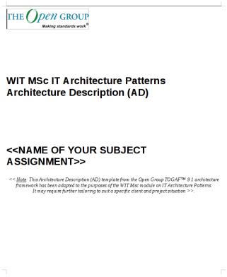
As we are starting our first deliverable, we will first focus on enumerating the View Models, Patterns, Styles and annotate the rationale behind our decisions.
i.e. select the following Architecture Views:
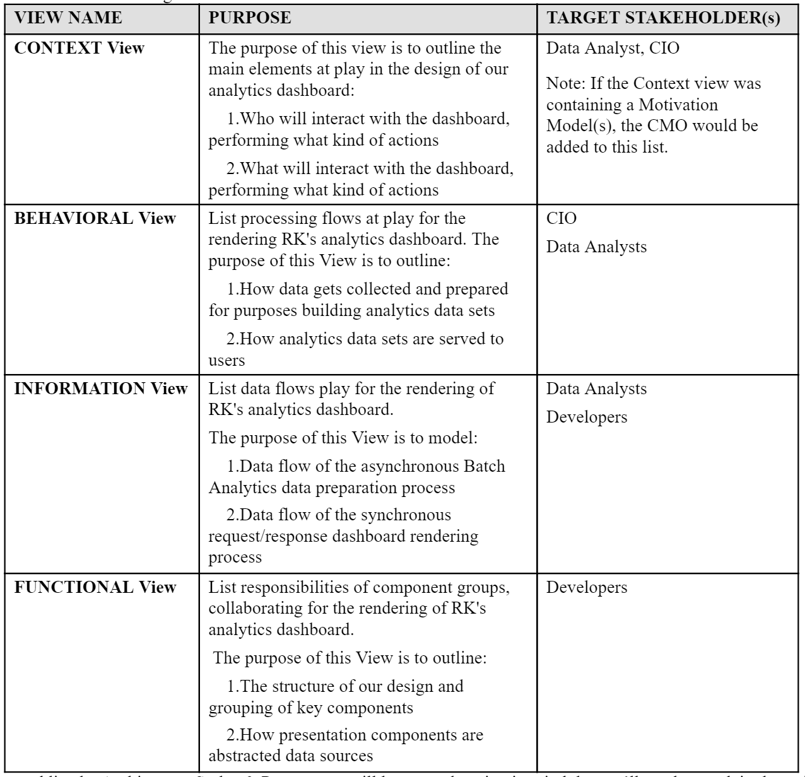
...and list the Architecture Styles & Patterns we will leverage, keeping in mind that we’ll need to explain the rationale behind their selection, and how these link to Views:
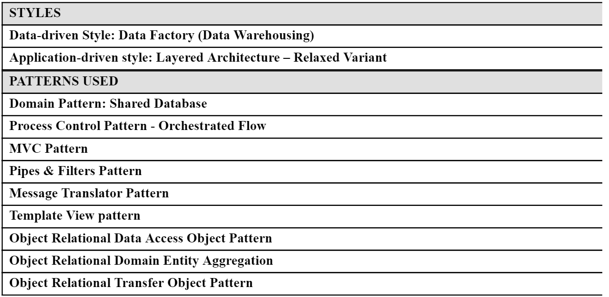
We will address the Required Quality Attributes of the architecture with Perspectives, and for each, record decisions and trade-offs we made.
This is something we haven’t yet worked in our Labs, but is an important aspect of our architecture, so let’s take the time to document the required quality properties of our solution:
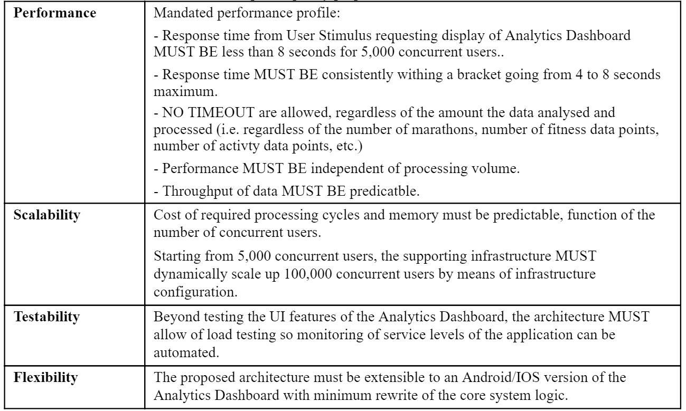
Lastly, it is important to spend some time to capture elements of the problem space that give some essential context to the Architecture we put forward, and articulate a few key assumptions for Stakeholders to confirm:
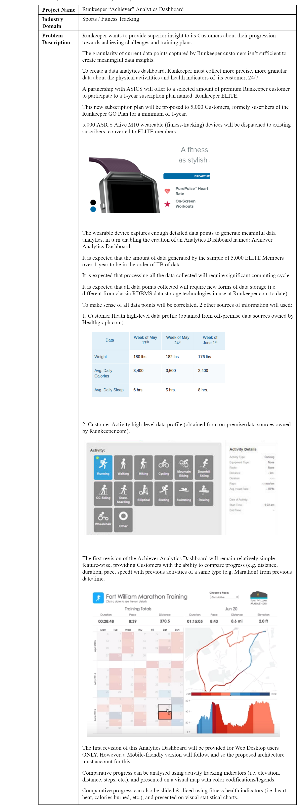
Download the TOGAF AD 9.1 Template provided
Based on the descriptions provided above, fill-out the PROBLEM SCOPE section (Section A.1) of the AD Template
Based on the descriptions provided above, fill-out the REQUIRED QUALITY PROPERTIES section (Section A.3) of the AD Template
Based on the descriptions provided above, fill-out the ARCHITECTURE VIEWS section (Section B.1) of the AD Template
Note: The resulting output / solution can be found here:
In order to describe the Context View of of Architecture Solution, we select two types MODEL PRIMITIVES, each based on a specific VIEW TYPE:
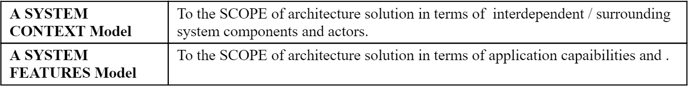
The SYSTEM CONTEXT MODEL describing part of our CONTEXT VIEW is described as follows:
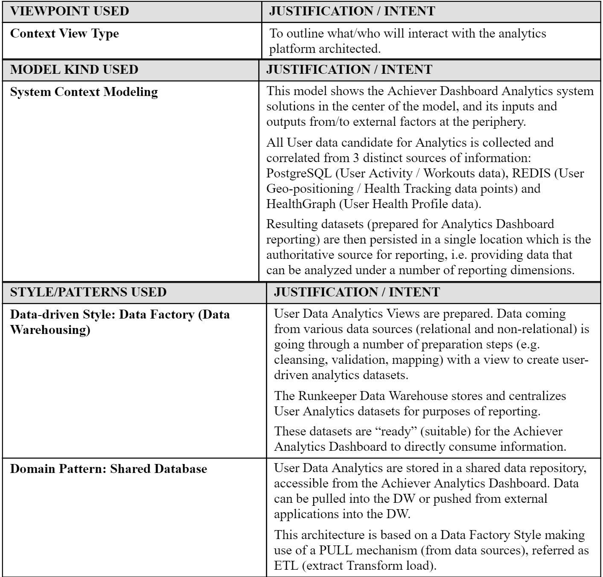
The corresponding model artifact, created in a previous Lab greatly benefits from the descriptions above, (typically during an architecture review):
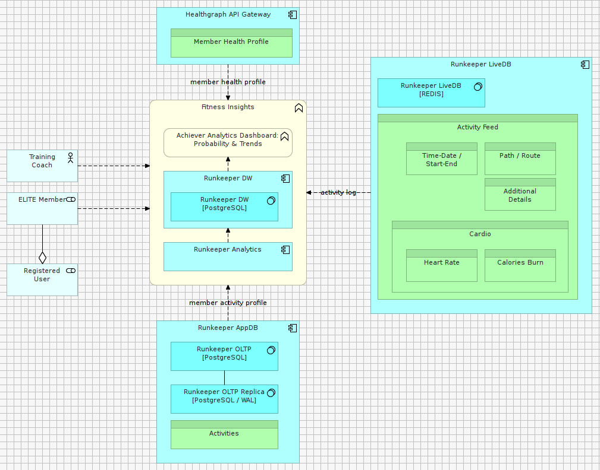
Based on the descriptions provided above, fill-out the VIEW INTENT section (Section B.2.1) of the AD Template
Based on the descriptions provided above, fill-out the VIEW MODELLING ARTIFACTS section (Section B.2.2) of the AD Template
Note: The resulting output / solution can be found here:
The SYSTEM FEATURES MODEL describing part of our CONTEXT VIEW is described as follows:
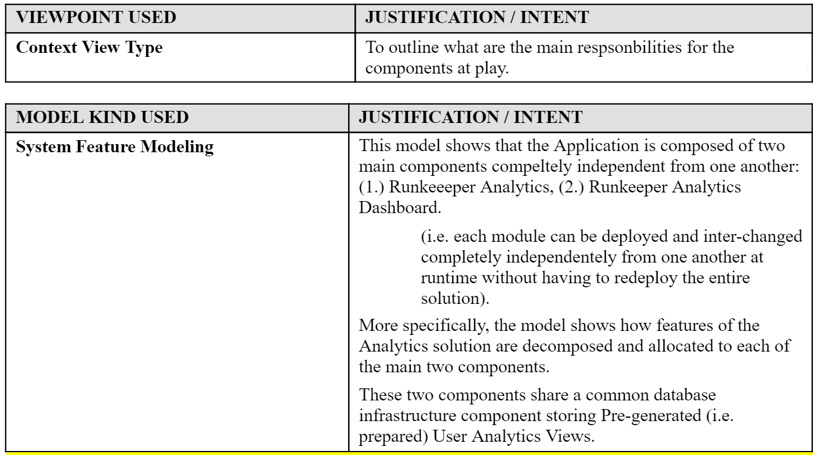
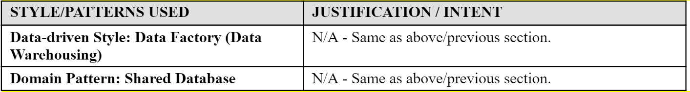
The following model artifact, created in a previous Lab, can then be reviewed:
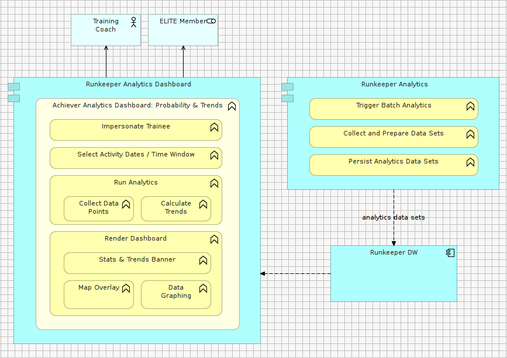
Note: The resulting output / solution can be found here:
In the same way we have document the Context View of our Architecture in the section above, other Views can be generated using the same structure.
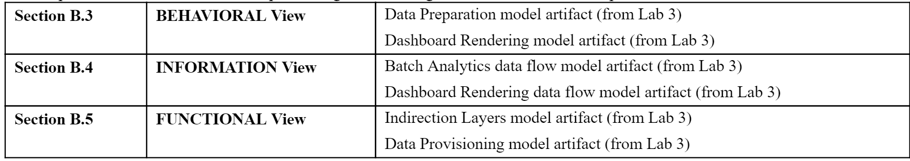
Note: The resulting output / solution can be found here:
We need to address the Required Quality Attributes of the architecture with Perspectives, and for each, record decisions and trade-offs we made.
For this Lab, we will prefer answering required quality attributes preferring textual description over visual models. There is not good reason for this; it is perfectly acceptable to annotate existing Archimate models with colors, legends and comments to document Perspectives.
For example: A description of the Flexibility/Maintainability Perspective of our Analytics Dashboard.
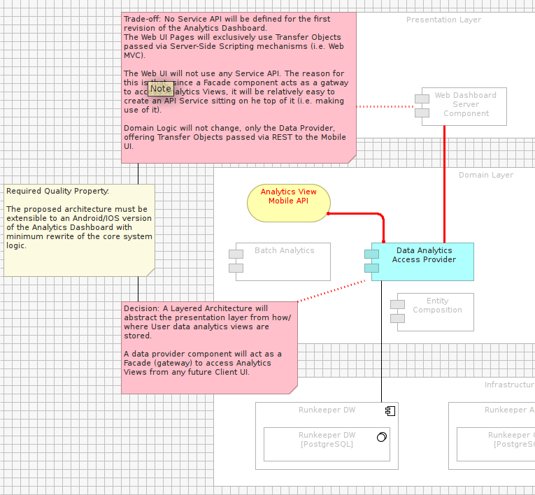
However, the most common practice in the industry remains structured textual contents.
As a result, and for the purposes of this Lab, what follows prefers a textual description over modeling.
Required Quality Attribute(s):
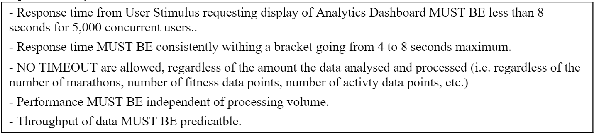
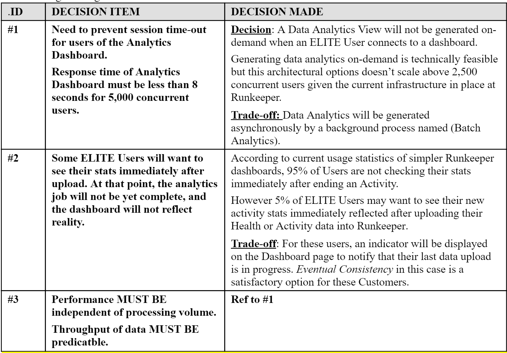
Fill-out the PERFORMANCE PERSPECTIVE section (Section B.6.1) of the AD Template, using textual descriptions proposed above.
Reflexion point: Imagine what models you would annotate if you had to represent your Perspectives using visual models (hence keeping traceability of architectural decisions version-controlled in the same framework as the rest of your model artifacts).
Reflexion point: Since the Quality Properties of an Architecture (like Performance) permeate across many Views of a solution design, would generating a Mapping of existing Views into one Model help your annotation efforts?
Note: The resulting output / solution can be found here:
Required Quality Attribute(s):
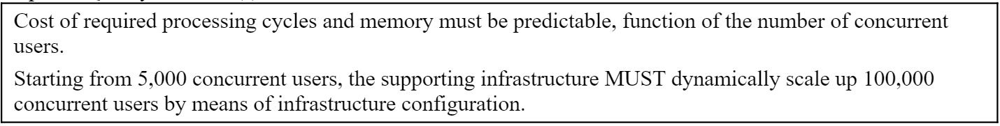
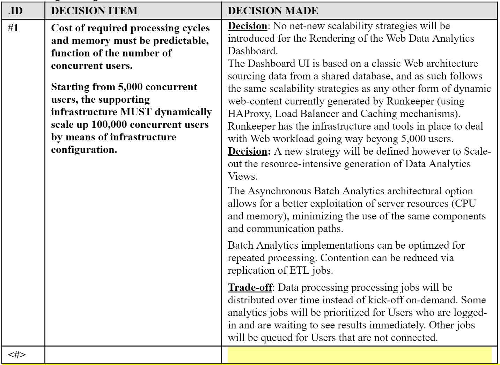
Note: The resulting output / solution can be found here:
Required Quality Attribute(s):
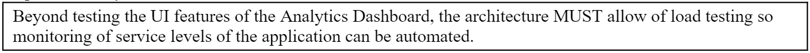
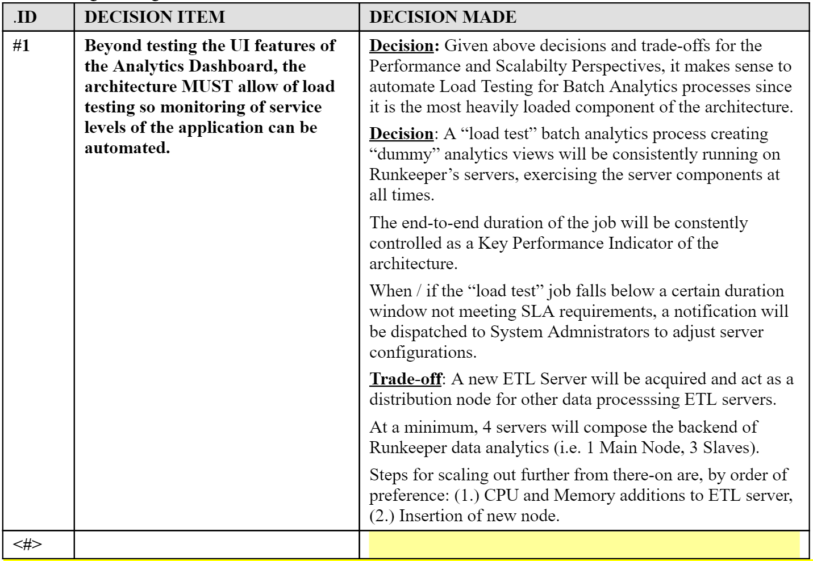
Note: The resulting output / solution can be found here:
Required Quality Attribute(s):
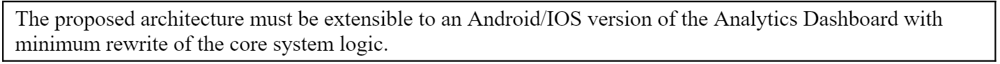
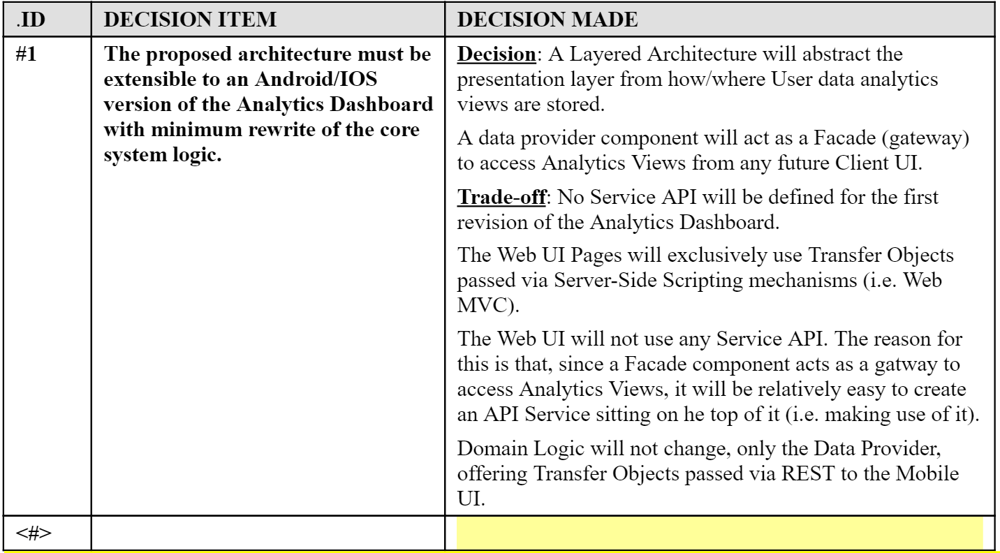
Note: The resulting output / solution can be found here: